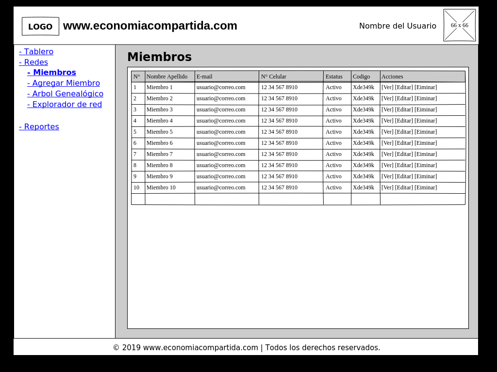

NetworkMarketing
Exported at: Tue Jan 22 2019 18:09:22 GMT-0500 (-05)
HomePage
MenuPrincipal
Redes-(Miembros)

Redes-(Miembros-Agregar)-paso1
Redes-(Miembros-Agregar)-paso2
Redes-(Arbol Genealogico)
Redes-(Explorador de Red)